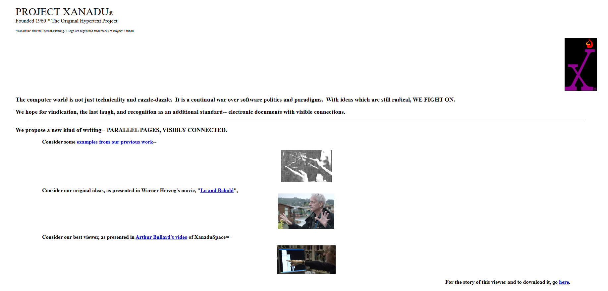
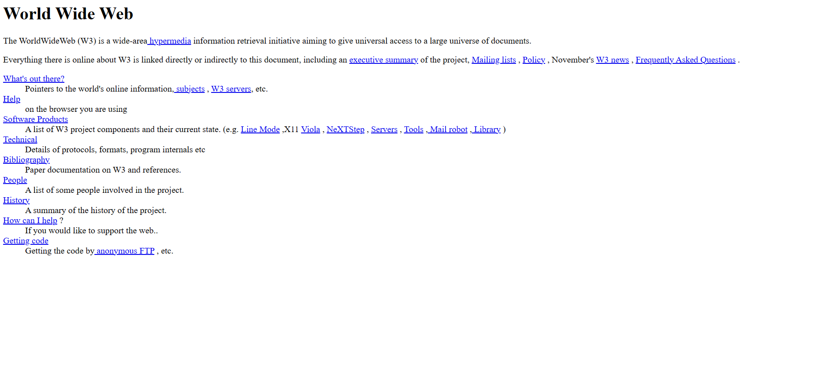
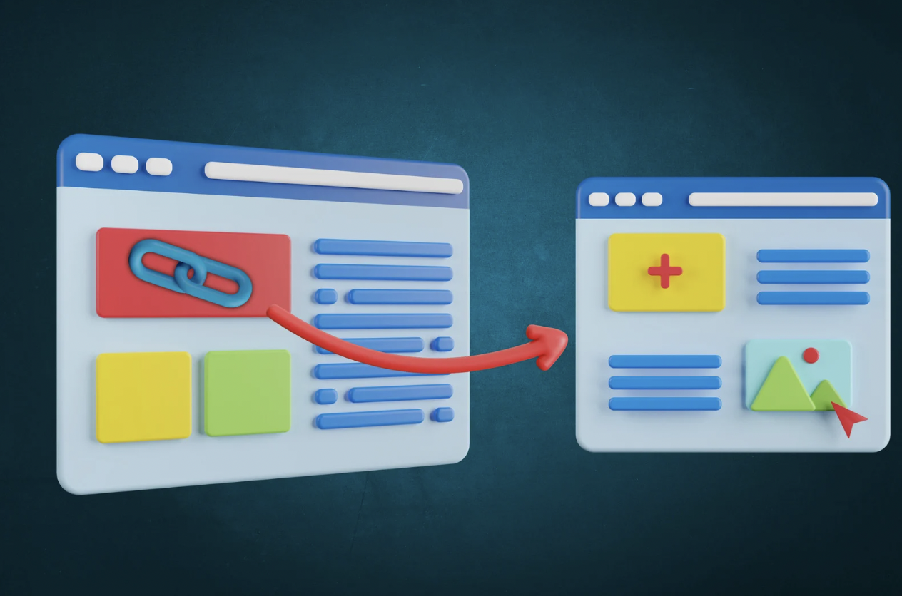

History of Hyperlinks
Early Beginnings
The concept of hyperlinks dates back to the early days of computing when researchers and engineers envisioned a network of interconnected documents. In 1965, Ted Nelson coined the term "hypertext" to describe a system of linked documents that could be browsed non-linearly.
One of the earliest implementations of hypertext was the Xanadu project, initiated by Ted Nelson in the 1960s. Xanadu aimed to create a global hypertext system where users could navigate between documents using hyperlinks.
Development of HTML
The modern concept of hyperlinks as we know them today emerged with the development of HTML (Hypertext Markup Language) in the late 1980s. Tim Berners-Lee, a British computer scientist, invented HTML as a way to create and share documents on the World Wide Web.
In 1991, the first website was created by Tim Berners-Lee at CERN, which showcased the capabilities of hyperlinks to navigate between web pages. This marked the beginning of the web as we know it.
Evolution of Hyperlinks
Over the years, hyperlinks have evolved to support various types of content and interactions. The introduction of CSS (Cascading Style Sheets) allowed web developers to style hyperlinks, enhancing their visual appearance and usability.
The functionality of hyperlinks expanded significantly with the introduction of JavaScript and AJAX. Developers could then create dynamic, user-responsive pages where hyperlinks played a crucial role. This includes partial page updates without a full reload, which significantly improved user experience on the internet by reducing load times and saving bandwidth.
Moreover, the evolution of hyperlinks was also influenced by the rise of search engine optimization (SEO). Search engines use hyperlinks to discover and index content, with the quality and context of these links directly affecting page rankings. This has made the strategic use of hyperlinks crucial for website visibility and traffic acquisition.
In social media, hyperlinks have transformed into mechanisms for sharing content across platforms, enabling the viral spread of news, images, and videos. They serve as bridges between personal, professional, and public digital spaces, amplifying the impact of shared information.
Recently, advancements in web technology such as HTML5 and responsive web design have further changed the functionality of hyperlinks. They now support more complex interactions in web applications and adapt to various devices, enhancing accessibility and user engagement.
Modern Trends
In today's digital landscape, hyperlinks are ubiquitous across all types of digital content, including websites, emails, documents, and social media platforms. They serve as gateways to vast amounts of information, facilitating seamless navigation and discovery.
One of the most significant modern trends is the use of hyperlinks in mobile applications and responsive designs. As mobile usage continues to surpass desktop browsing, hyperlinks have adapted to function effectively on smaller screens with touch interfaces. This includes larger clickable areas and context-aware linking that anticipates the user's next move based on their current engagement.
Hyperlinks are also becoming smarter with the integration of artificial intelligence and machine learning. Websites and applications now use predictive linking, where algorithms analyze a user's behavior to suggest links most relevant to their interests. This not only improves user engagement but also personalizes the browsing experience.
Another trend is the increasing importance of hyperlink security due to the rise in phishing attacks and other malicious activities. Enhanced security protocols and practices, such as the use of HTTPS, are becoming standard to ensure the integrity and safety of link navigation.
Furthermore, hyperlinks are evolving beyond just URL redirection. They are now used to trigger actions within applications, such as initiating downloads, changing settings, and even controlling Internet of Things (IoT) devices. This functional versatility shows the expanding role of hyperlinks in interactive and connected digital environments.
Future Outlooks
The future of hyperlinks holds promise for even more innovative applications. As technologies such as augmented reality (AR) and virtual reality (VR) continue to advance, hyperlinks may play a crucial role in navigating immersive digital environments.
Hyperlinks in AR and VR could transform how users interact with digital content, moving from traditional click-based navigation to gesture or gaze-controlled links. This would allow users to engage with web and multimedia content in a completely spatial and interactive manner, significantly enhancing the user experience in educational, entertainment, and e-commerce platforms.
Additionally, the integration of hyperlinks with blockchain technology could revolutionize content verification and ownership, creating immutable links that ensure content authenticity and security. This could be particularly valuable in combating misinformation and copyright violations.
Moreover, the evolution of hyperlinks might extend to seamless integration with the Internet of Things (IoT), where clicking a link could trigger real-world actions. For example, a hyperlink in a digital recipe could start a smart oven, preheat it to the right temperature, and even monitor cooking times, bridging digital commands with physical actions.
In summary, the future of hyperlinks looks to extend far beyond simple web navigation, becoming integral components of a deeply interconnected and responsive digital world, reshaping how we interact with technology on a fundamental level.